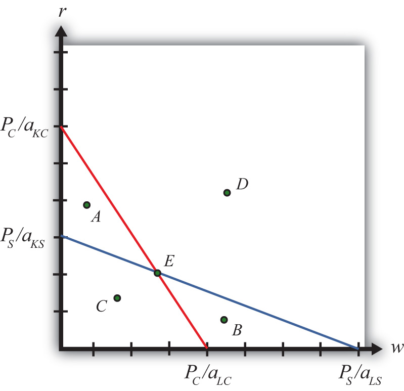
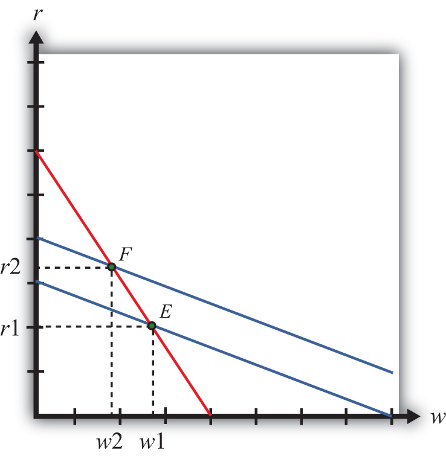

The Stolper-Samuelson theorem demonstrates how changes in output prices affect the prices of the factors when positive production and zero economic profit are maintained in each industry. It is useful in analyzing the effects on factor income either when countries move from autarky to free trade or when tariffs or other government regulations are imposed within the context of a Heckscher-Ohlin (H-O) model.
Due to the assumption of perfect competition in all markets, if production occurs in an industry, then economic profit is driven to zero. The zero-profit conditions in each industry imply
PS = aLS w + aKS rand
PC = aLC w + aKC r,where PS and PC are the prices of steel and clothing, respectively; w is the wage paid to labor, and r is the rental rate on capital. Note that is the dollar payment to workers per ton of steel produced, while is the dollar payment to capital owners per ton of steel produced. The right-hand-side sum then is the dollars paid to all factors per ton of steel produced. If the payments to factors for each ton produced equal the price per ton, then profit must be zero in the industry. The same logic is used to justify the zero-profit condition in the clothing industry.
We imagine that firms treat prices exogenously since any one firm is too small to affect the price in its market. Because the factor output ratios are also fixed, wages and rentals remain as the two unknowns. In Figure 5.4 "Zero Profit Lines in Clothing and Steel", we plot the two zero-profit conditions in wage-rental space.
Figure 5.4 Zero Profit Lines in Clothing and Steel
The set of all wage and rental rates that will generate zero profit in the steel industry at the price PS is given by the flatter blue line. At wage and rental combinations above the line, as at points A and D, the per-unit cost of production would exceed the price, and profit would be negative. At wage-rental combinations below the line, as at points B and C, the per-unit cost of production would fall short of the price, and profit would be positive. Notice that the slope of the flatter blue line is .
Similarly, the set of all wage-rental rate combinations that will generate zero profit in the clothing industry at price PC is given by the steeper red line. All wage-rental combinations above the line, as at points B and D, generate negative profit, while wage-rental combinations below the line, as at A and C, generate positive profit. The slope of the steeper red line is .
The only wage-rental combination that can simultaneously support zero profit in both industries is found at the intersection of the two zero-profit lines—point E. This point represents the equilibrium wage and rental rates that would arise in an H-O model when the price of steel is PS and the price of clothing is PC.
Now, suppose there is an increase in the price of one of the goods. Say the price of steel, PS, rises. This could occur if a country moves from autarky to free trade or if a tariff is placed on imports of steel. The price increase will cause an outward parallel shift in the blue zero-profit line for steel, as shown in Figure 5.5 "Graphical Depiction of Stolper-Samuelson Theorem". The equilibrium point will shift from E to F, causing an increase in the equilibrium rental rate from r1 to r2 and a decrease in the equilibrium wage rate from w1 to w2. Only with a higher rental rate and a lower wage can zero profit be maintained in both industries at the new set of prices. Using the slopes of the zero-profit lines, we can show that , which means that clothing is labor intensive and steel is capital intensive. Thus, when the price of steel rises, the payment to the factor used intensively in steel production (capital) rises, while the payment to the other factor (labor) falls.
Figure 5.5 Graphical Depiction of Stolper-Samuelson Theorem
If the price of clothing had risen, the zero-profit line for clothing would have shifted right, causing an increase in the equilibrium wage rate and a decrease in the rental rate. Thus an increase in the price of clothing causes an increase in the payment to the factor used intensively in clothing production (labor) and a decrease in the payment to the other factor (capital).
This gives us the Stolper-Samuelson theorem: an increase in the price of a good will cause an increase in the price of the factor used intensively in that industry and a decrease in the price of the other factor.
State what is true about profit in the steel and clothing industry at the wage-rental combination given by the following points in Figure 5.4 "Zero Profit Lines in Clothing and Steel" in the text.